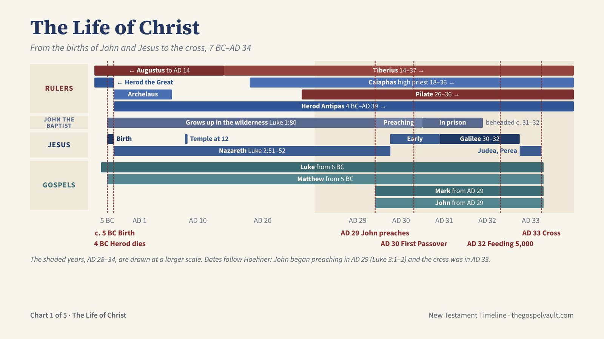
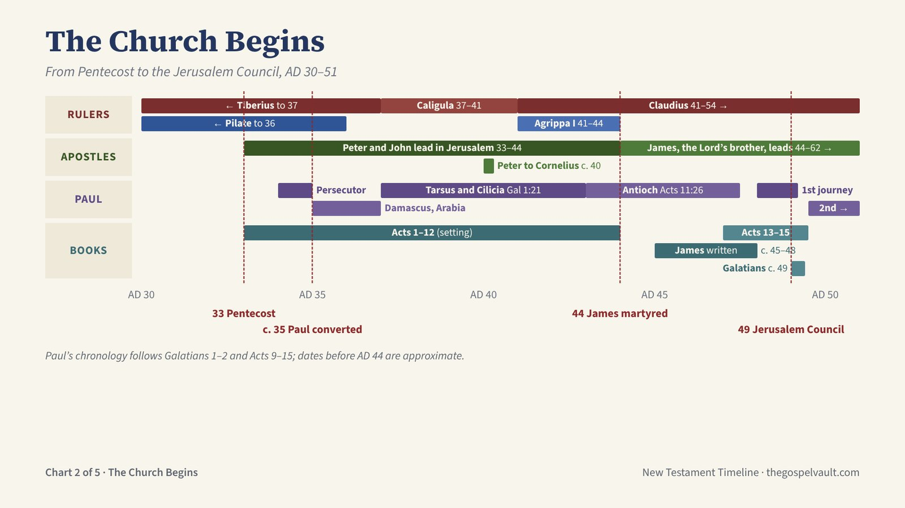
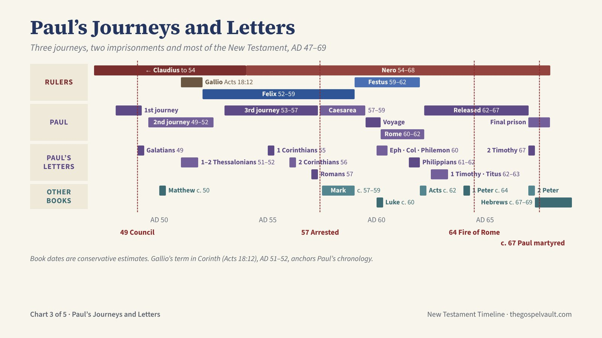
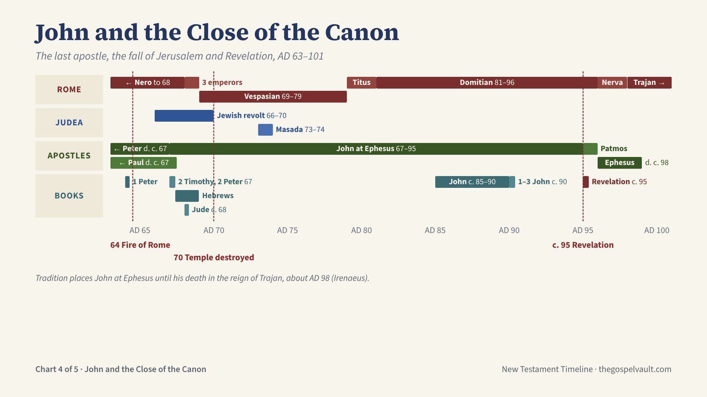
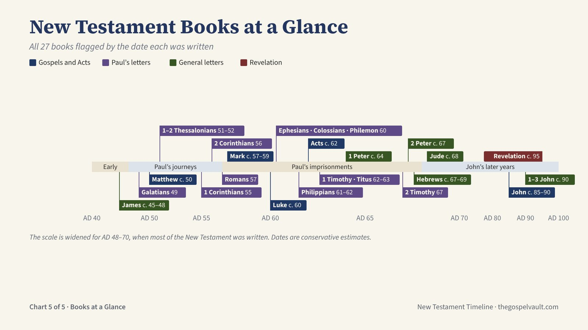

Vault 3 · New Testament · Charts & Maps
Five charts tracing the New Testament from the births of John and Jesus to Revelation: the life of Christ, the church in Jerusalem, Paul’s journeys and letters, and John’s last years. A final chart places all 27 books by the date each was written. Click any chart to see it full size, or download them all.

From the births of John and Jesus to the cross, 7 BC–AD 34
Births: John the Baptist was born about 5 BC, six months before Jesus (Luke 1:36). Jesus was born before Herod the Great died in 4 BC (Matt 2:1, 19). Herod’s kingdom was then divided: Archelaus in Judea (Matt 2:22), Herod Antipas in Galilee and Perea.
Hidden years: John grew up in the wilderness until his public appearance (Luke 1:80). Jesus grew up in Nazareth (Luke 2:51–52); at twelve he was in the temple, his Father’s house (Luke 2:41–49).
Ministry (Hoehner’s chronology): the word of God came to John in the fifteenth year of Tiberius (Luke 3:1–2), AD 29. Jesus was baptized late in AD 29 and began an early ministry in Judea, including the first Passover of AD 30 (John 2:13). After John’s imprisonment Jesus centered his ministry in Galilee (Mark 1:14), AD 30–32, including the feeding of the five thousand near Passover AD 32 (John 6:4). His later ministry in Judea and Perea led to the cross.
The cross: Jesus was crucified on Friday, 3 April AD 33, rose on the third day, and ascended forty days later (Acts 1:3). Pentecost and the church follow on the next chart.
Gospels: Matthew and Luke begin with the births (Luke from the announcement to Zechariah, about 6 BC); Mark and John begin with John the Baptist’s ministry.

From Pentecost to the Jerusalem Council, AD 30–51
Pentecost, AD 33: fifty days after the resurrection the Holy Spirit came and the church began (Acts 2). Peter and John led the church in Jerusalem (Acts 3–5).
Stephen was martyred about AD 34–35 (Acts 7), and the persecution that followed scattered the believers (Acts 8:1). Saul the persecutor was converted on the Damascus road about AD 35 (Acts 9).
Paul’s early years (Gal 1:15–24): Arabia and Damascus, then a first visit to Jerusalem three years later, about AD 37; then Tarsus and Cilicia; Barnabas brought him to Antioch, where the disciples were first called Christians (Acts 11:25–26).
Peter took the gospel to the Gentile Cornelius about AD 40 (Acts 10). Herod Agrippa I killed James the son of Zebedee in AD 44 and imprisoned Peter (Acts 12); Agrippa died that same year. James, the Lord’s brother, then led the Jerusalem church until his martyrdom in AD 62.
Paul and Barnabas made the first missionary journey in AD 48–49 (Acts 13–14). The Jerusalem Council in AD 49 confirmed that Gentiles are saved by grace through faith, without circumcision (Acts 15).
Books: James is probably the earliest New Testament book (about AD 45–48). Galatians was written about AD 49, after the first journey.

Three journeys, two imprisonments and most of the New Testament, AD 47–69
Paul’s journeys: the first with Barnabas, AD 48–49 (Acts 13–14); the Jerusalem Council, AD 49 (Acts 15); the second, AD 49–52, including eighteen months in Corinth (Acts 15:36–18:22); the third, AD 53–57, including about three years in Ephesus (Acts 18:23–21:16).
Gallio was proconsul of Achaia in AD 51–52, dated by an inscription found at Delphi. Paul stood before him in Corinth (Acts 18:12), which fixes the second journey.
Imprisonments: arrested in Jerusalem in AD 57 (Acts 21), held at Caesarea under Felix and Festus until AD 59 (Acts 24–26), the voyage and shipwreck (Acts 27–28), then two years under house arrest in Rome, AD 60–62 (Acts 28:30). Released, he travelled again, was arrested a second time and was martyred under Nero about AD 67–68 (2 Tim 4:6–8).
Paul’s letters by date: Galatians 49; 1–2 Thessalonians 51–52 (from Corinth); 1 Corinthians 55 (from Ephesus); 2 Corinthians 56; Romans 57 (from Corinth); Ephesians, Colossians and Philemon 60 and Philippians 61–62 (the prison letters, from Rome); 1 Timothy and Titus 62–63; 2 Timothy 67, his last letter.
Other books: Matthew about AD 50; Mark about 57–59; Luke about 60 and Acts about 62 (Acts ends with Paul still in Rome); 1 Peter about 64; 2 Peter about 67; Hebrews about 67–69, before the temple’s fall. Dates follow conservative estimates and are approximate.

The last apostle, the fall of Jerusalem and Revelation, AD 63–101
Rome: Nero blamed the Christians for the fire of AD 64 and persecuted them; Peter and Paul were martyred in Rome about AD 67–68. After Nero’s death came the year of three short-lived emperors (Galba, Otho and Vitellius), then Vespasian (69–79), Titus (79–81) and Domitian (81–96), under whom John was exiled to Patmos.
Judea: the Jewish revolt began in AD 66. Titus took Jerusalem and destroyed the temple in AD 70, as Jesus had foretold (Matt 24:1–2; Luke 21:20–24). Masada fell in AD 73–74.
John: tradition places him at Ephesus from about the late 60s. He was exiled to Patmos “because of the word of God and the testimony of Jesus” (Rev 1:9), where he received the Revelation about AD 95. After Domitian’s death he returned to Ephesus and died there about AD 98, in the reign of Trajan (Irenaeus).
Books: 1 Peter about 64; 2 Timothy and 2 Peter about 67, written as both apostles faced death (2 Tim 4:6; 2 Pet 1:14); Hebrews about 67–69, before the temple fell; Jude about 68; the Gospel of John about 85–90; 1–3 John about 90; Revelation about 95, closing the canon.

All 27 books flagged by the date each was written
All 27 New Testament books, flagged at the approximate date each was written. Dates are conservative estimates; every book except John’s writings was written before the temple fell in AD 70.
Gospels and Acts: Matthew about 50; Mark about 57–59; Luke about 60; Acts about 62; John about 85–90.
Paul’s letters (13): Galatians 49; 1–2 Thessalonians 51–52; 1 Corinthians 55; 2 Corinthians 56; Romans 57; Ephesians, Colossians and Philemon 60; Philippians 61–62; 1 Timothy and Titus 62–63; 2 Timothy 67.
General letters (8): James about 45–48, probably the earliest book; 1 Peter about 64; 2 Peter about 67; Hebrews about 67–69; Jude about 68; 1, 2 and 3 John about 90.
Revelation about AD 95, from Patmos under Domitian, closes the canon.
The band beneath the flags shows the setting: the early church, Paul’s journeys, Paul’s imprisonments, and John’s later years. The scale is widened between AD 48 and 70 so the books of that period can be read.
The PowerPoint shows each chart as a full-slide picture, with the notes above on every slide.